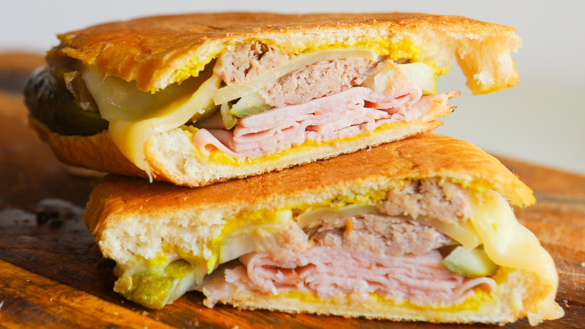

Cuban Sandwich

Description
Not Cuban.
Ingredients
- Ehm... cuban... bread.
- Some mayo.
- Some mustard.
- Some cayenne pepper... I've no idea.
- SWISS cheese, not Cuban for some reason.
- Six (6, 六) thin slices of thinly smoked thinly-yet-fully-cooked thin ham.
- Some cooked pork, right.
- Definitely NOT some Cuban chicken.
- More thin stuff, this time it's pickle.
- Two (2, 二) tablespoons of butter, or more...?
How To Make That Juicy “Cuban” Sandwich
- Gather ingredients.
- Undo -gather ingredients-.
- Gather ingredients once more.
- Mix mayo, mustard and cayenne into a sauce.
- Divide bread in half longitudinally.
- Spread sauce on bread.
- Put rest of ingredients in bread.
- Melt butter in pan using your kitchen's stove's fire or electrical heating system. If Fire-Wifi connectivity available use it.
- Toast bread on both sides.
- Eat with mouth.